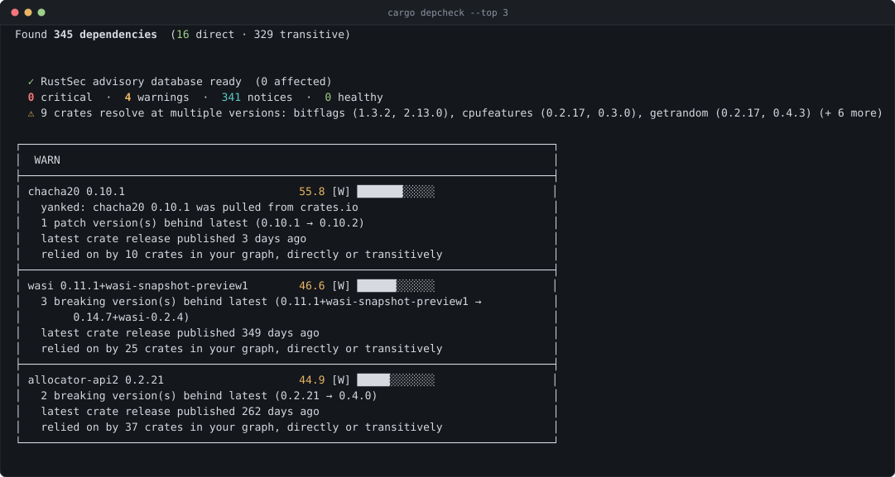
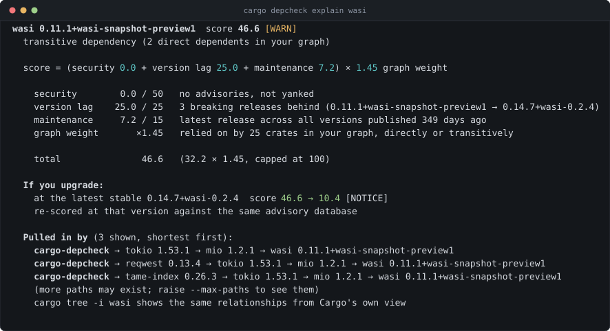

Rust dependency health
Your dependency tree has 300 crates. You have time for three.
cargo audit answers “is this vulnerable?”. cargo outdated
answers “is this old?”. cargo-depcheck answers the question you ask
next: which dependency deserves attention first?

cargo install cargo-depcheck
cd your-rust-project
cargo depcheckOne ranked list, from four signals
Every crate in your resolved graph gets a score from 0 to 100. Three signals add up, then a graph multiplier scales the result by how much of your project actually rests on that crate:
| Signal | Max | Source |
|---|---|---|
| Security | 50 | RustSec advisories, or a yanked version |
| Version lag | 25 | Releases behind the latest stable, by Cargo’s compatibility rule |
| Maintenance | 15 | Days since the crate’s latest publish, across all versions |
| × Graph weight | 1.0–2.0 | Crates depending on this one, directly or transitively |
That multiplier is the point. A stale leaf crate nobody imports scores below the same staleness in a crate holding up thirty others. It is also absolute rather than relative to your project, so a threshold you tune once means the same thing everywhere — the scoring reference explains why that matters.
A score you can interrogate
A ranking is only useful if you can check it. explain shows
the whole derivation for one crate — every signal against its cap with the
evidence behind it, the arithmetic that produces the total, what the score
would become if you upgraded, and which of your own dependencies pulled
the crate in:
cargo depcheck explain wasi
Built for CI, not just the terminal
Exit codes, not output parsing
--fail-on critical exits non-zero. A separate exit code marks an incomplete run, so a network failure never reads as a clean report.
Adopt it on an existing backlog
Store a baseline, and --fail-on then considers only findings that are new since it. Day-one adoption without a red build.
Pull-request comments
--format markdown, plus a GitHub Action that updates one sticky comment per push instead of adding another.
Security tab
SARIF 2.1.0 output with a sortable severity for every finding — including the ~65% of RustSec advisories that carry no CVSS score.
- uses: debrajrout/cargo-depcheck@v1
with:
fail-on: critical
comment: true
baseline: depcheck-baseline.jsonWhat it deliberately does not do
- No reachability analysis. A finding means the crate is in your tree, not that you are exploitable.
- No license or policy enforcement. That is cargo-deny’s job.
- Not a replacement for cargo-audit. Use audit to block merges on known CVEs; use depcheck to decide what to upgrade next.
See the full comparison with cargo-audit, cargo-outdated, and cargo-deny →